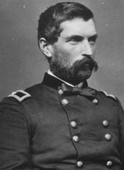
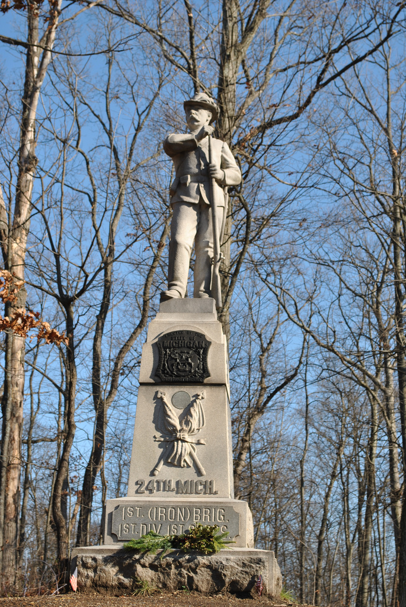
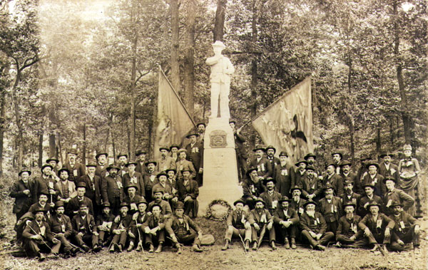

|
In the tradition of great regiments who fought in the Civil
War, the 24th Michigan Volunteer Infantry was indeed a
regiment whose history is both fascinating and inspiring.
Shortly after its formation in mid-1862, the 24th Michigan
found itself being placed into the infamous Iron Brigade of
the Army of the Potomac. The Iron Brigade, previously
consisted of the 19th Indiana, and the 2nd, 6th and 7th
Wisconsin regiments.' These regiments did not receive the
24th Michigan with complete open arms. The 24th Michigan
followed the Army of the Potomac to Fredericksburg and
Chancellorsville, and all of the way to Gettysburg. At
Gettysburg, the 24th Michigan suffered huge casualties, but
it still remained a fighting regiment unit for the entire
length of the war. The 24th Michigan swore it would win the
respect of the veteran members of the Iron Brigade. In just
under two and a half years of fighting, the men of the 24th
Michigan fought their way to nineteenth place on the list of
"300 Fighting regiments."
When studying a regiment who fought in the Civil War,
three questions appear to come to mind: Why did the men
enlist, Why did they fight, and why did they stay? Many
Civil War scholars have pondered over the possible answers
to these questions. Civil War Professor and Historian,
James McPherson strongly believes ideological motivations
were the driving forces behind why men enlisted, fought and
stayed in the Civil War. Ideological motivations such as
patriotism and the preservation of law and order under a
Republican government. McPherson, in his book, For Cause
and Comrades, states "duty and honor were indeed powerful
motivating forces."' Bell Wiley, another professor and one
of America's preeminent Civil War historians, however,
believes that soldierhood and the experiences of war are

The Iron Brigade was one of the most
famous and respected units to fight in the Civil War.
|
what led hundreds of thousands of men to participate in the
war. Wiley writes that indeed ideological motivations were
present, but the overall glue which held regiments together
was the bonding of the men while in camp and in battle.
While focusing on the 24th Michigan, the history of his
regiment tends to focus on answering why these men fought in
the Civil War. The pivotal reason behind why the 24th
Michigan fought and stayed in the Civil War was to prove
themselves to be not only good soldiers, but also good men.
Having the disadvantage of entering a war which had been
going on for almost two years, the 24th Michigan needed to
show to themselves as well as to the hardened veterans of
the Iron Brigade they could fight with as much tenacity as
any of them. The will and determination of the 24th
Michigan is to be greatly admired. This regiment was
determined to be accepted into the Iron Brigade, which
consistently choose to shun the newer group of rookies.
The motivation behind this acceptance also resides with
the 24th Michigan trying to remove the impressions from the
veteran soldiers on why they enlisted in the first place.
Bounty regiments, which were regiments made up of men who
did not volunteer out of their pure will, but out of the
persuasion from being offered up to thousands of dollars in
rolls of greenbacks in order to enlist. The 24th Michigan
had mistakenly gained the reputation of being a bounty
regiment and the idea of this type of bounty regiment
joining the Iron Brigade was thoroughly detested. "Like
every one of the thousands of regiment in the Civil war, the
24th Michigan had its own history. In plain fact, instead
of being one of the first bounty regiments, this outfit was
one of the old rally round-the-flag groups of simon-pure
volunteers. In order to erase this preconceived notion, the
24th Michigan understood what lay ahead of them. They
needed to demonstrate to the entire brigade what they were
made of and this desire was clearly the motivation behind
why the 24th Michigan fought and stayed in the Civil War.
The beginnings of the 24th Michigan were overshadowed by
turbulence. As the call for 300,000 more soldiers for the
Union Army was made by President Lincoln, Michigan was asked
to supply six more regiments on June 28, 1862. The city of
Detroit decided to hold a huge war rally to answer the
summons for more troops. As the speakers began, a group of
hecklers began to hiss and make noise, and soon forced the
speaker off the stage. To attempt to silence the crowd,
Judge Henry A. Morrow, chairman of the meeting, announced he
personally was going to volunteer and enlist into the Union
Army. The crowd paused momentarily, but the band of
hecklers, who were Southern sympathizers who had fled to
Canada, were already dispersed throughout the crowd. This
group, along with a group of Copperheads, began to shout at
the speakers. The Copperheads were a "faction of the
northern Democratic Party who opposed the transformation of
the Civil War into a total war - a war to destroy the old
South, instead of to restore the old Union. These
dissenters were completely convinced the rumor of a draft
being put into effect to support the Union was coming true
and the target of this draft would be the poorer classes of
Michigan. Soon feelings of resentment, mixed with anger,
were aroused and transformed the crowd into an angry mob.
The mob was finally broken up when Judge Morrow and the
Sheriff of Wayne County, Mark Flanigan, took control of the
situation. The people of Detroit were outraged by the
actions of the mob. Many citizens of Detroit had already
sent their sons to war and now the effort to contribute
money and supplies was doubled. An appeal for the creation
of a new regiment above and beyond the six originally
requested and create a seventh regiment, was made to war
time governor of Michigan, Austin Blair, to refute the
disgrace felt by the city after the riot. Raising another
regiment, in addition to the six requested was thought to be
difficult, according to Governor Blair, but in reality there
were so many volunteers ready to enlist that some were
actually sent to be assigned to regiments in other areas.
The 24th Michigan was granted the authority to be raised on
July 19, 1862, with Judge Henry Morrow being named as
Colonel.
With Colonel Morrow at the head of the 24th Michigan the
regiment was formed in about two weeks, excluding Sundays of
course. The position of lieutenant colonel was given to
Mark Flanigan, who would prove to demonstrate both courage
and efficiency as an officer. The 24th Michigan consisted
of companies A through K, for a total of roughly 900 men.
The average age of the enlisted man was twenty-five. The
youngest person to enlist was Willie Young, he was barely
thirteen years old, and he served as drummer boy for the
entire war. The oldest was James Nowlin, who claimed to be
forty-four, but it was later discovered he had dyed his
beard and when he was killed later by disease at
Brookstation, Virginia, in December 1862, he was actually
around the age of seventy!
The men of the 24th Michigan were men of good
backgrounds. Physicians, ministers, lawyers, teachers,
students, and farmers were the most common professions of
these volunteers. They represented what was known as the
"best blood of Wayne County." Also, forty-nine Canadians
enlisted in the 24th Michigan, adding to the 325
foreign-born members. Farmers created the largest single
occupation with 412 in all, and one ironic note is of all
the professions with the highest demand in a time of war -
the coffin maker - there was only one man. These men who
answered the call to arms in the summer of 1862, were the
last of the volunteers. The patriotic surge which had its
peak after the fall of Fort Sumter had begun to wean. The
long list of wounded and killed in the newspapers across the
country had men concentrating on not whether they could
enlist before the war over as was the case in 1861, but
rather what the odds were of their survival. However, the
men who enlisted in the 24th Michigan disregarded any of
these fatalistic notions. As one man stated while waiting
to volunteer into the 24th, "The old flag was in danger;
already the bones of many of my countrymen are bleaching in
the Southern sun. We do not fully realize our country's
situation. We hear of battles, but they sound like tales of
other days. But there is something we can understand. Sick
and wounded are straggling home. This is no boy's play. I
must enlist."
Here is the answer to why the men of the 24th Michigan
Volunteer Infantry enlisted. These men were not going to
stand around and hear tales of battles. They were not going
to listen to the sounds of drums beating on the far
distance. These men were, in fact, going to answer the call
of the bugle. The men of the 24th wanted to enlist, as
McPherson said, it was their "duty and honor," to serve
their nation. The men of the 24th Michigan enlisted because
they firmly believed it was now their turn to fight for
country. Their President had called specifically to each of
them individually to come and fight. McPherson believes the
ideological reasons such as patriotism and honor were what
motivated soldiers to enlist in the Civil War and the 24th
Michigan represents these ideological motivations behind why
men enlisted. Of course, this decision was not always easy.
Some men were "tom between their desires to enlist and their
parents' or wives' objections." These men were the ones
could be seen reading and rereading recruiting posters and
listening to speakers, and always in the end went home
wearing a suit of Union blue, with their deed accomplished.
The recruiting of the 24th Michigan in many ways was
compared to a huge religious revival. The legion gathered
to the tune of "We Are Coming, Father Abraham,"" until it
officially became a regiment. The suddenness of the
enlistment left some families worried about how they would
survive without the men area, but local relief funds were
established for the recruits' families by city and
townships. It should also be noted that none of the men of
the 24th received any local or state bounties, which is
unfortunately a rumor that will come back to haunt them
later.
October 9, 1862, was slated to be a red-letter day for
the 24th Michigan. The regiment had just received word they
would be sent to join the infamous Iron Brigade. The
commander of the Iron Brigade, General John Gibbon, had
pleaded with General McClellan to send him another regiment
preferably from either Wisconsin or Indiana, to help bring
the Brigade back up the full strength. The Iron Brigade had
once mustered 2,300 men in August 1862, but after the
ravages of battle, only less than one thousand men total
remained in all four regiments - the 19th Indiana, and the
2nd, 6th, and 7th Wisconsin. General McClellan replied,
"That is impossible, but I will send you a Michigan
regiment, and they are good as there are in the service.""
The men of the Iron Brigade reluctantly accepted the news,
mainly focusing not really wanting a Michigan regiment,
especially a brand-new regiment, to join them.
|

Maj. Gen. John Gibbon
|
General Gibbon inspected the 24th Michigan on Thursday
October 9, 1862. The men had washed themselves and their
uniforms were freshly pressed. They cleaned all their arms
and equipment because they had heard of the reputation of
the Iron Brigade and the 24th was determined to make a good
first impression. General Gibbon appeared pleased with what
he saw and welcomed Colonel Morrow along with his men to the
ceremony where they would soon meet their veteran comrades.
The 24th Michigan did not fully realize what welcome was in
store for them from the Iron Brigade. As the 24th marched
onto the parade ground, they saw the mighty Iron Brigade
"standing with the natural ease of the battle-hardened
infantrymen." These were men who had the look and attitude
of those who had stared death directly in the face on more
than one occasion. These were veterans, men who had already
proved themselves in battle, and the message was crystal
clear that if these upstarts who were standing in front of
them wanted to join them, they would have to earn the right,
it was not going to be given to them.
The ceremony in which the 24th Michigan joined the Iron
Brigade officially was anything but pleasant. The mere size
of the 24th put them instantaneously at a huge disadvantage
with regards to the attitude from the Iron Brigade. They
stood across from the Iron Brigade with the same amount of
men in one regiment as the entire Iron Brigade had with a
total of four regiments. The addition of the 24th had
practically doubled the size of the entire brigade. The
veterans looked upon the newcomers with open hostility,
contempt, and skepticism. In their gaze upon the 24th
Michigan, one could easily see the age-old impersonal
feeling of the veteran to the recruit: "We have had it and
you have not, and until you have been where we have been and
done what we have done, we do not admit to you any kind of
fellowship."
The 24th Michigan received this message perfectly. They
were nervous and totally aware of the newness of their
uniforms labeled them rookies and the test of soldierhood
still was ahead of them. To the veterans of the Iron
Brigade, the somewhat illogical notion occurred to them, it
was, "the fault of these boys from Michigan that they
brought with them new uniforms, free of battlefield blood,""
proving they were no match for the Iron Brigade. The 24th
Michigan now was determined to win the respect of the Iron
Brigade, but this task was not going to be easy by any
means, The reason behind why the men of the 24th fought in
the civil war becomes clear from this point. The men of the
24th needed to prove they belonged out there on the
battlefield just as much as any of those veterans of the
Iron Brigade, and the only way to prove this point was to
fight in a battle and show what courage they had. The 24th
Michigan knew it possessed the same amount of unending
bravery that all of the members entire Iron Brigade
possessed.
On one side of the parade stood the Iron Brigade, with
their worn and dusty uniforms and their trademark black
hats. General Gibbon had once supplied his men with white
leggings and black felt hats that were high with a wide brim
turned up on the side and fastened. The other regiments in
the Army of the Potomac were issued the standard forage cap,
but the Iron Brigade wore these unique hats with pride.
They soon became known as the "Black Hatters"" These hats
symbolized the high morale of the Iron Brigade and they
loved how their hats were seen as a distinguishable
trademark that along with their intense battlefield
strength, set them apart from the rest of the Army of the
Potomac. These hats were seen by the 24th Michigan as the
badge of honor the Brigade was permitted to wear, instead of
the cap like the rest. Acquiring this hat would be the badge
of acceptance into the Iron Brigade the 24th so badly wanted
to have.
The first attempt to try to be accepted was made by
Colonel Morrow when he made a patriotic and uplifting
speech. He drew not one cheer or even a ripple from the
crowd to acknowledge he was even heard. One private wrote
in his diary, "A pretty cool reception, we thought. We had
come out to reinforce them, and supposed they would be glad
to see us." The camaraderie the new recruits had heard so
much about would obviously need to be earned and the only
place to earn this would be in battle. The 24th Michigan
started to put every effort into their drilling in order to
get ready for battle. The 24th Michigan was drilled so
prodigiously, with Colonel Morrow giving battalion drills
for six hours everyday and an additional four hours of what
Colonel morrow termed, "other evolutions of the school of
the soldier." General Gibbon complimented Colonel Morrow by
saying he had the best drilled regiment he had ever seen for
a rookie regiment.
As this compliment slowly made its way down the ranks, a
small uplifting occurred for the men of the 24th, but this
did nothing to make the veterans attempt to warm up to them.
The 24th Michigan was so anxious to get into battle. They
drilled themselves even harder, to make use of every
possibility to prepare themselves for battle. The tension
in the camp was almost unendurable. The 24th was waiting
for a chance to fight because through engaging in a battle,
the 24th knew that was the way, "to fight its way into the
brigade's fellowship." The opportunity to fight in battle
was actually just over the horizon, in a town called
Fredericksburg
On the way to Fredericksburg in December 1862, sickness
became a serious problem for the 24th. Many of the fine
officers had fallen deathly ill, but all of them refused to
leave the regiment. The 24th was assigned to guard the
railroad fines in the ten miles stretch between the towns of
Aquia Creek and Falmouth, which were across the river from
Fredericksburg. The 22nd New Jersey had come to help the
24th Michigan set up a mini-hospital out of tents because
the numbers of sick men was almost out of control. The
weather had turned bitterly cold and disease ran rampant in
the camp, but the men of the 24th despite losing many men to
disease or long convalescence, continued to move on to
Fredericksburg because these men desperately wanted to
engage in battle.
December 13, 1862, proved to be the turning point for the
24th Michigan. As the Iron Brigade began to be given the
orders for their formations, General Meade decided to divide
the 24th Michigan into two wings since it was a large
regiment and had, "not yet been kissed," The 24th entered
the battle with limitless courage. The men of the 24th
withstood heavy enemy fire all day, but they did not waiver
in their courage. Sergeant Shattuck of Company B, proudly
wrote in his first battlefield letter home to his wife
explaining: "We were frequently obliged to change our
position to keep out of enemy range. Old regiments of our
division say they never before stood under so heavy a fire
for so long a time. Our regiment elicited many compliments.
Even the Rebel General Ewell, who commands the enemy in
front of us, sent a flag of truce over here with his
compliments to General Doubleday and stated he never saw an
infantry stand better under artillery fire." The men of the
24th had now "seen the elephant", they were now veterans.
Despite the Union army not gaining much at the Battle of
Fredericksburg, the 24th gained something it had desperately
needed. The casualties of the army more than doubled those
of the Confederate army. However, the 24th Michigan had
finally received the opportunity to show what it was made of
at the Battle of Fredericksburg, even if the Union army did
not win, the 24th Michigan did. The 24th Michigan received
compliments from many Generals throughout the army. General
Doubleday said that since the regiment had never been under
fire," I was pleased to see the courage and alacrity with
which they performed. The men stood as if rooted to the
spot and through suffering severely from the enemy's
canister, they did not yield an inch." Another Rebel general
added that once he had realized the 24th had been a green
regiment, he walked away shaking his head. These
compliments were exactly what the 24th needed to gain their
acceptance into the Iron Brigade This was the greatest
compliment of all.
Gone was the old feeling of hostility and skepticism
which had characterized most relations between the 24th
Michigan and the rest of the Iron Brigade. Now, for the
first time after the Battle of Fredericksburg was officially
over, the other regiments made the motion to come and join
the 24th around the campfires and made the attempt to
finally get acquainted with the new regiments. No longer
did the 24th have to suffer from the strained silence it had
been receiving since its arrival. Now, finally, the Iron
Brigade welcomed a little camaraderie with the boys from
Michigan. On that night the fires burned a little longer
than usual and the sharing of tobacco and coffee beans could
easily be seen between all of the men in the brigade. The
24th was now officially in the Iron Brigade and all that was
missing was that badge of honor those damned black hats!'
(General Gibbon promised they were on the way!)
The motivation to stay in the Civil War for the 24th
Michigan became a motivation to continue to prove themselves
to be good soldiers and men. The 24th had now earned the
respect of the 24th and now the 24th wanted to continue to
show they were both brave and determined soldiers.
Throughout the entire war, the 24th suffered tremendous
losses in battle. This was the price most regiments paid
when displaying a spirit to fight and a dedication to the
cause of preserving the Union at any costs, even when that
cost was one's own life. The 24th Michigan had made a
commitment to both themselves and their country to fight
until the last breath remained in their body and that was
the intention of each and every one of them this is why the
men of the 24th stayed in the war. The needed to see their
cause become victorious and they would give their lives in
exchange for this cause. The men of the 24th also stayed
because of the respect they had for their fellow members of
the Iron Brigade. The idea of fighting as a whole was what
allowed the men to stay and fight until the very end. These
men knew the were not alone in this fight and each man
standing next to him on the battlefield was also willing to
give the same commitment that he had give. This motivation
is another reason why men stayed in the Civil War,
especially the men of the 24th. These men had fought so
hard to win the respect of the Iron Brigade and they were
not going to allow anything to take that respect away. These
men decided to fight until the end as long as they were
still alive because now they were men of the Iron Brigade
and more importantly they were the men of the 24th, and had
a name for themselves as well.
At the infamous Battle of Gettysburg, the 24th only saw
action on the first day - July 1, 1863. The Iron Brigade
encountered Archer's Brigade of Tennesseeans and Alabamians
at the crest of McPherson's Ridge, which runs parallel to
Seminary Ridge The 24th were able to rout Archer's men, but
things with the rest of the Iron brigade were starting to
fall apart. Throughout the day, the 24th assumed six
different positions. The 24th was ordered to Culp's Hill,
where it faced two-thirds of the Confederate army. The men
of the 24th were tired, hungry, and almost out of
ammunition, a very similar situation to almost all of the
Northern regiments. The 24th recognized their position and
they knew they must defend it if General Ewell decided to
attack. Captain Edwards of the 24th had assumed command
because his senior officers could not be located, including
Colonel Morrow, who had already been seriously wounded.
Captain Edwards divided the regiment into two parts and
prepared the regiment to defend itself in another battle,
but General Ewell had all the fighting he had wanted. The
attack was not made.
After the first day of battle at Gettysburg, the Iron
Brigade was, "reduced to a shadow of its former self." The
24th Michigan had the most fearful loss. They had lost "399
of its 496 men that had been shot for a loss of eighty
percent!" Among these losses were four color bearers, and
when Colonel Morrow had seen the fifth man shot he himself
grabbed the colors and waved them to boost morale for his
troops, but quickly a private ran over to him and took them
away explaining that it was not up to a colonel to carry the
colors. This man was then shot and another man took the
colors, after this man, the sixth to carry the colors was
also shot. Colonel Morrow again grabbed the colors, only
this time he too was shot as a bullet creased his skull and
he went down."
That night after the sun went down, the Confederates had
laid a number of the 24th's wounded in a house in
Gettysburg. Colonel Morrow had been captured after being
shot and was taken to a Confederate hospital where he ran
into General Ewell. General Ewell told Colonel Morrow he
was surprised to see Colonel Morrow fire upon their advance
when General A.P. Hill had purposely told his men to hold
|

Monument to the 24th Michigan Infantry at Gettysburg
|
their fire. General Ewell also stated it was foolish of the
24th not to surrender after they had so badly been shot up.
Colonel Morrow's answer was, "General Ewell, the 24th
Michigan came here to fight, not to surrender." Colonel
Morrow was able to return to his regiment on July 4 where he
was able to share the same quarters as his men. As he
entered the hall where the other wounded men lay, they rose
their heads to Colonel Morrow and asked him if he was
finally satisfied with his regiment. The answer was
obvious, he had always been satisfied with them, and now he
was even more proud than he had ever been before.
For his leadership he displayed in holding his regiment
to their task after four-fifths of them has fallen at the
Battle of Gettysburg, Colonel Morrow was recommended for
promotion by General Abner Doubleday in late 1863: "At
Gettysburg, where he was wounded, he was among the most
distinguished for skill, coolness, and bravery. The Colonel
has fairly won his promotion and it is equally due to the
service and its government that he would have it.33 On
January 25, 1865, Colonel Morrow was officially promoted to
brigadier general of the Third Brigade, Third Division,
Fifth Corps. Colonel Morrow was said to have been an
excellent judge of men and possessed the a marked ability to
command." Lieutenant Colonel Mark Flanigan also possessed
enormous amounts of courage. He lost a leg at Gettysburg,
but after returning home he continued a career in law
enforcement as Provost Marshall of the state of Michigan.
Colonel Morrow and his fellow officers led the 24th Michigan
with the highest caliber of command. With these leaders,
morale of the 24th continued on a steady upward pace. The
24th was one of those fortunate regiments who did have both
competent and respected leaders. The men of the 24th
admired the men who led them into battle, which makes a
tremendous difference for morale. As the leaders of the
24th earned the respect of their men, the camaraderie felt
among the unit as whole was undeniable. The 24th Michigan
used the courage demonstrated by Colonel Morrow and his
officers to propel them to fight in battle with undying
bravery.
Colonel Morrow was highly respected by his men right from
the beginning. He was one of those leaders who would not ask
his men to do anything he himself would not do. This aspect
of his leadership was key to winning the respect of his men.
"Enlisted men were particularly impressed by officers who
were willing to share their burdens on the march,"" wrote
Civil War historian James McPherson, to illustrate how
leadership by example is one of the most motivating factors
to get men to follow and Colonel Morrow was a master at
this. McPherson also states, 'The personal courage of
officers was unquestionably a powerful factor in motivating
men to follow them." Colonel Morrow was able by his powerful
leadership to rally the men of the 24th to follow him into
battle despite whatever their losses to that point had been.
Great leadership is the secret to why the men of the 24th
continued to fight in all of their battles. It was this
leadership that led the men of the 24th to gain their
acceptance into the Iron Brigade. Colonel Morrow was
instrumental in the demonstration of the bravery the 24th
showed in battle.
The 24th Michigan continued to serve in the Union army
after Gettysburg. They fought under General Grant at the
Battle of the Wilderness, at Spotsylvania, at Cold Harbor,
and at Petersburg. On April 9, 1865, the news the war was
over reached the camp of the 24th. Officers and men hugged
each other with shouts and tears of joy. The men celebrated
until the sun rose for next day. The duties for the next
few days were performed with gladness because the men were
counting the days left of enlistment on their fingers. These
men were ready to go home.
The end of the war was overshadowed by the disastrous
assassination of President Lincoln on April 14, 1865. The
funeral train of the fallen President was making its long
journey to Springfield where the President would be laid to
rest. The 24th Michigan was notified that they would
participate in the ceremonies of the reception, lying in
state, and interment. A small dispatch led by Lieutenant
Colonel Edwards was drawn in line at the train station in
Chicago. The funeral procession left for the State House
building, with the guard of honor, including three officers
from the 24th, guarding the coffin of the President as
|

A reunion of the 24th Michigan Infantry at Gettysburg in 1889
|
75,000 mourners filed past the President. At 8:00 am on May
4, 1865, the funeral ceremonies began with the 24th Michigan
standing at the head of the military escort, directly behind
the hearse. The 24th Michigan escorted the hearse carrying
the President all the way to his final resting place." This
honor was the highest the 24th Michigan felt they could ever
receive. The men of the 24th understood in their hearts
they were a truly honorable regiment and the entire country
would be these to see them, No longer were there to be any
doubts of what these men could accomplish. They were able
to pay a final tribute to their beloved leader.
The 24th Michigan Volunteer Infantry symbolized the heart
and soul of many of the men who fought in the Civil War.
These men went up against all odds to win acceptance into
the Iron Brigade and they finally did. The 24th Michigan
then fought with undying courage at many of the bloodiest
battles of the war and never once did their courage falter.
Why did the men of the 24th enlist? They enlisted to answer
their call to duty, it was their chance to show how much
they loved their country. Why did the men of the 24th fight?
These men fought because they were determined to show they
could fight and be good soldiers. The 24th was also
determined to win acceptance into the Iron Brigade. Why did
the men of the 24th stay? These men stayed because of the
camaraderie they felt with each other and the other men they
fought with. The great leaders of the 24th, such as Colonel
Morrow, did nothing but encourage the men of the 24th to
stay and fight with every last ounce of their energy. The
men of the 24th won the respect they truly deserved. The
inspiring history of the 24th Michigan is one that may not
be as well known as other regiments in the Civil War, but it
is just as valuable and important.
Source: History 191 Student Amy Harrison
|